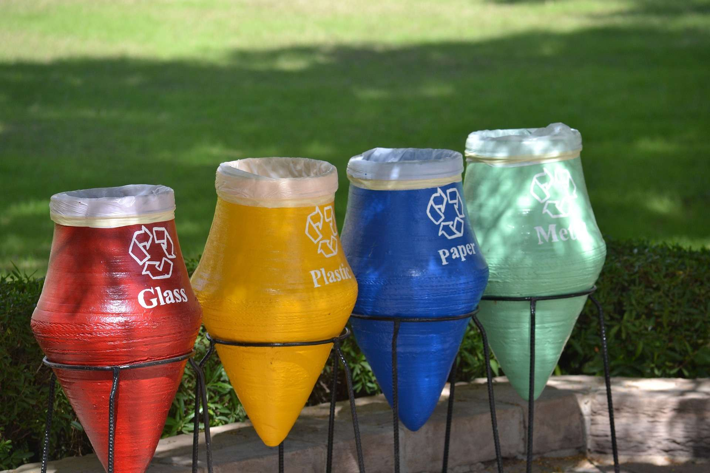

Recicle Agora!
Reciclar na praia é essencial para manter nosso litoral limpo e saudável. Ao reciclar, você ajuda a preservar o meio ambiente e a beleza natural das praias, garantindo que todos possam desfrutar de um ambiente limpo e seguro.
Descubra como pequenas ações podem fazer uma grande diferença. Junte-se a nós nessa jornada rumo a um futuro mais sustentável!


Pesquisas Recorrentes
Estamos entusiasmados em compartilhar artigos sobre sustentabilidade com você! Nosso objetivo é fornecer informações práticas e relevantes que possam ser incorporadas ao seu dia a dia. Juntos, podemos fazer a diferença e construir um futuro mais verde.